Floor 03
Wellness · The Ritual of Returning
Concrete, linen and breath — where the body returns to itself.
Enter the floor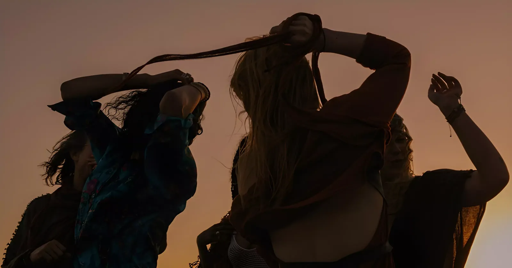
The Building
Wellness · The Ritual of Returning
Concrete, linen and breath — where the body returns to itself.
Enter the floor
The Bar · The Ritual of Listening
Dim light, vinyl and cocktails — a hidden listening room.
Enter the floor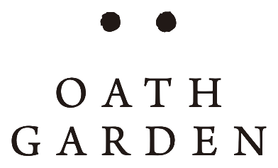
The Kitchen & Garden · The Ritual of Gathering
Coffee, natural wine and the long table — where the day begins.
Enter the floorThe Ritual of Gathering
Morning light · Coffee · Natural wine · Community
The day begins here. Hands grinding coffee, the slow pour, ceramics still warm from the kiln. Bread broken over long tables, natural wine as the light turns gold.
This is the ritual of gathering — unhurried, human, alive. Nothing glamorous, everything real: the grain of the wood, the weight of a cup, the conversation between strangers who leave as friends.
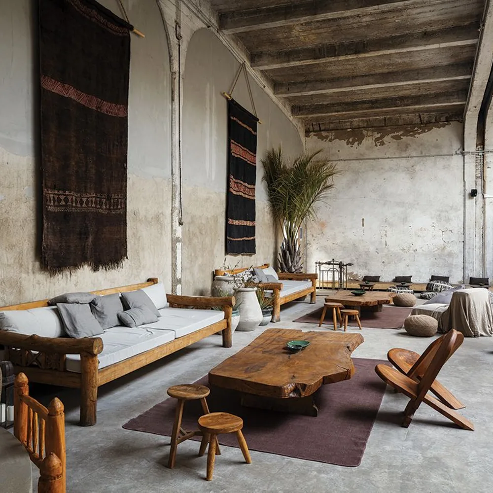
The gathering room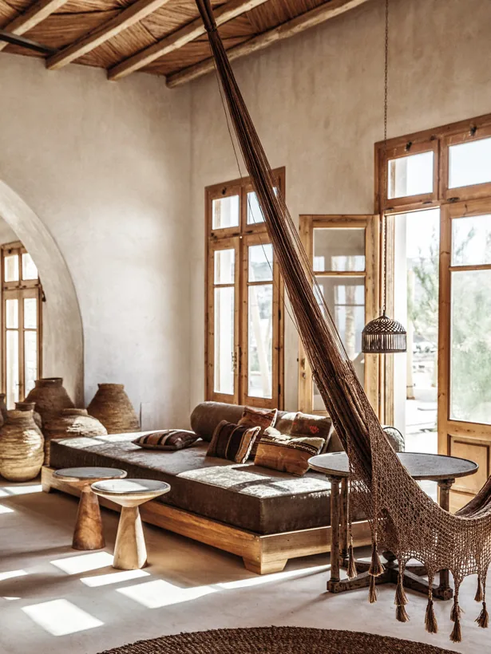
Warmth & texture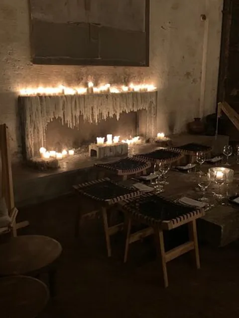
The long table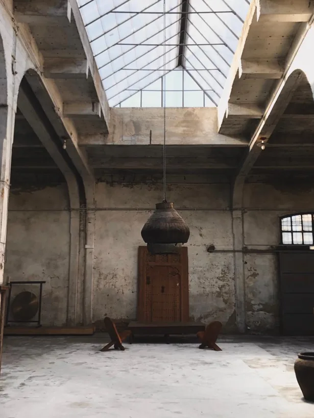
Morning light
The Ritual of Listening
Dim light · Vinyl · Cocktails · Smoke & wood
When the sun goes down, the house lowers its voice. A hidden listening room of warm valves and turning records, of a cocktail built slowly and a needle set down with care.
Here sound is not background. It is the reason. Sit close. Stay late. Let the room hold you.
Tonight on the Turntable
A side traced through warm valves and turning vinyl. Two sets, one needle.
Step into PapersoundThe Ritual of Returning
Breath · Recovery · Stillness · Movement
Concrete and linen. Natural light moving slowly across a bare floor. A room built for the body to return to itself — through breath, through movement, through stillness.
This is where the house exhales. Come empty. Leave grounded.
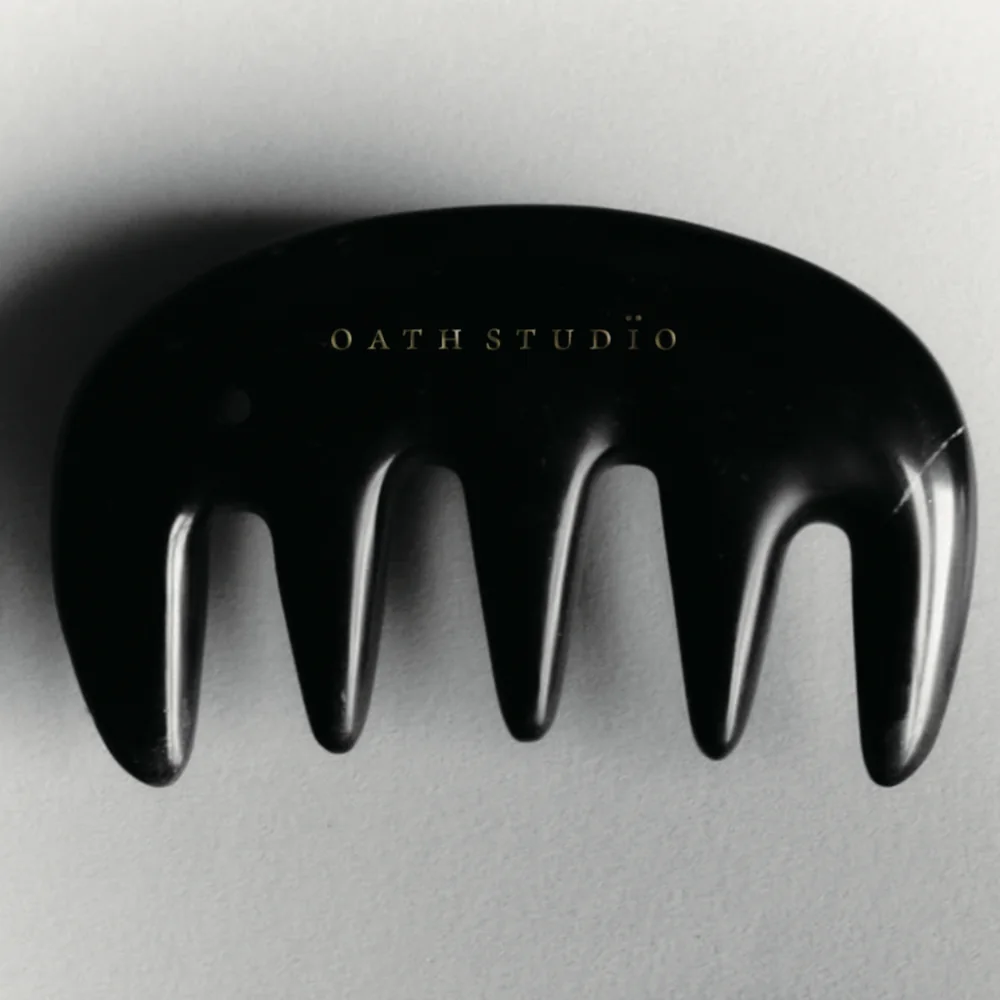
The studio toolsBreathe in — hold — release
Cultural Programming
Vientiane · 2026 Season
Featured · The House
Once a year the whole house opens at once — fire in the garden, records in Papersound, breath in the studio. A single evening where food, sound and movement become one ritual.
Papersound
An evening tracing the thread between Lao molam, dub and ambient. Records only. Two sets, one needle.
Oath Garden
A shared harvest dinner. Low-intervention wine, fire-cooked vegetables, bread torn by hand.
Oath Studio
A morning of guided breath and resonant tone. Linen, concrete, and the body returning to stillness.
The House
A week-long open studio with a guest ceramicist. Throw, fire, gather. Closing exhibition Sunday.
Papersound
Moving image and live score under low light. A conversation around the bar afterward.
Three Ways to Arrive
The house will write to you shortly to confirm. We look forward to having you.
Select an experience to begin.
The Journal
In a city that never stops, we made a place that does. A note on gathering, sound and stillness — and the year that brought Oath House to the heart of Vientiane.
Read the story